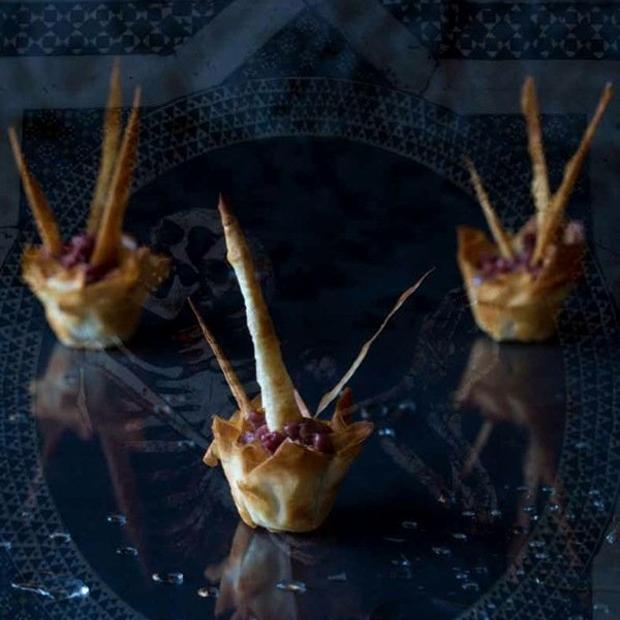

Tortinhas de Tartar de Coração

Tortinhas de Tartar feitas com carne de coração de vitela, irresistíveis e saborosas, sendo uma ótima opção para servir aos seus convidados ou aos seus familiares no encontro da família.
Ingredientes do tartar:
- 220g de carne de coração de vitela
- 1 colher de chá de azeite de oliva
- 1 colher de chá de alcaparras
- 1 colher de chá de picles picados
- 1 colher de chá cebola roxa picada
- Sal e pimenta a gosto
Ingredientes da tortinha:
- 6 folhas de massa filo
- Meia-xícara de mateiga derretida
Modo de Fazer:
- Para o tartar: remova as fibras e gorduras do coração antes de picar a carne. Combine os outros ingredientes e resfrie até a hora de servir.
- Para as tortinhas: intercale três fatias finas da massa filo com a manteiga derretida, aplicada com um pincel. Pelas pontas, puxe as folhas para cima em forma de cesta. Asse por 190º até a massa ficar dourada (cerca de cinco minutos).
- Para decorar: corte a massa filo em triângulos e enrole, formando uma espécie de chifre. Asse, seguindo as especificações das tortinhas, e coloque por cima do tartar na hora de servir.